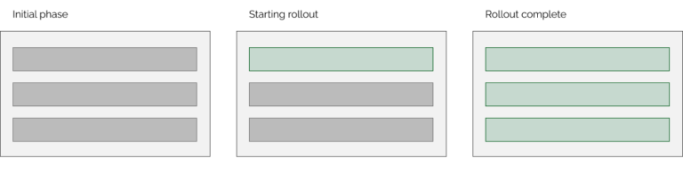
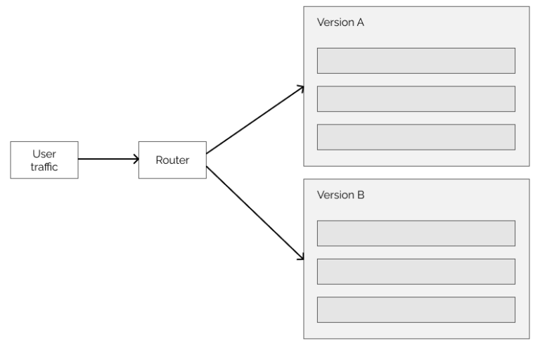
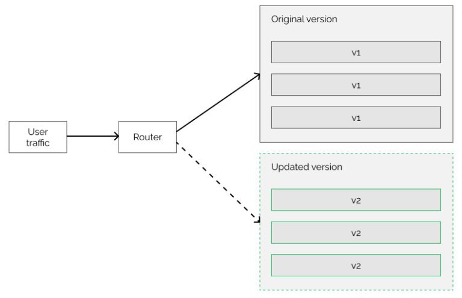

Understanding Deployment Strategies in DevOps
Posted on August 20, 2024
In the fast-paced world of software development, delivering updates and new features to users quickly and reliably is crucial. DevOps deployment strategies provide various methods for releasing software in a controlled and efficient manner, minimizing downtime and ensuring a seamless user experience. In this post, we'll explore the most common deployment strategies, their advantages and disadvantages, and tips for choosing the best strategy for your project.
1. Rolling Deployment: Gradual and Steady Updates
The application is updated incrementally, replacing instances of the old version with the new version one at a time. This strategy allows for zero downtime.
Imagine you’re replacing light bulbs in a hallway, one by one, without turning off the entire hallway’s lights. Similarly, in a rolling deployment, software updates are gradually applied to parts of the system (like servers or instances), one at a time. This ensures that the system stays live the entire time, and users experience minimal disruption. Rolling deployments are great for continuous delivery, as they allow updates to happen progressively without needing to take the whole system offline.
Advantages:
- Minimal downtime.
- Users experience a seamless transition.
- Can easily roll back if issues arise on specific instances.
Disadvantages:
- Monitoring is more complex since different instances run different versions.
- Requires careful orchestration and automation tools.
Best for:
Teams looking for continuous delivery with minimal impact on user experience.
2. Blue-Green Deployment: Seamless Switchovers
Two identical environments (blue and green) are maintained. The blue environment runs the current version, while the green is updated with the new version. Once the green environment is verified, traffic is switched to it, and the blue environment is kept for rollback if needed.
Think of two identical houses, one blue and one green. You live in the blue house (the live system), but whenever you want to remodel (update), you work on the green house. Once the green house is ready, you simply move in there, and the blue house becomes your backup. This is the essence of blue-green deployment. You maintain two identical environments, and when a new version is ready, you switch traffic to the updated environment. The old environment remains as a fallback in case something goes wrong.
Advantages:
- Zero downtime during deployment.
- Easy rollback by switching back to the previous environment.
- Allows for thorough testing in the green environment before going live.
Disadvantages:
- Requires double the infrastructure, increasing costs.
- Managing two environments can be complex.
Best for:
Critical applications where downtime is not an option and immediate rollback is necessary.
3. Canary Deployment: Testing the Waters
A small subset of users is routed to the new version, while the majority continue using the old version. If the new version works well, it's gradually rolled out to more users.
Consider a restaurant trying out a new dish by serving it to a small group of customers first. If they like it, the dish is added to the full menu. In a canary deployment, a new software update is released to a small, specific part of the user base. This "canary" group helps identify any potential issues. If the update works well for them, it’s gradually rolled out to everyone else. This strategy helps catch problems early and ensures a smoother experience for the wider user base.
Advantages:
- Issues can be detected early with minimal impact.
- Gradual rollout reduces the risk of widespread problems.
- Allows for real-world testing in a controlled manner.
Disadvantages:
- Users in the canary group may experience issues if something goes wrong. Complexity in managing different versions for different user groups.
- Requires careful monitoring and analysis.
Best for:
Applications with a large user base where early feedback and risk mitigation are essential.
4. A/B Testing: Optimizing User Experience
A/B testing is very similar to canary deployment. It can be considered a variant of it. This process deploys an update to a subset of users, just like canary deployments. However, A/B testing is mainly about getting feedback from the users about our changes. One part of the users keep using version A of the application while another part of them uses version B.
The goal is to decide if we want to roll out the update to all users. This can be a complicated process. We should consider technical aspects like application performance, but we might also want to receive feedback from users if they like the changes or not. For example, with A/B testing, we can measure if the users are more likely to click on a button if we replace the text on it. As its name suggests, an A/B deployment isn’t always related to an upgrade, but can rather be a feature test.
Advantages:
- Data-driven decision-making.
- Improves user experience based on real feedback.
Disadvantages:
- Can be time-consuming to set up and analyze.
- Requires a large user base to gather meaningful data.
Best for:
Teams focused on optimizing user experience and making informed decisions about feature rollouts.
5. Recreate Deployment: A Fresh Start
This is the simplest deployment strategy. The current version of the application is stopped, and the new version is deployed. There is downtime during the deployment.
Imagine closing a store for a day to completely remodel it before reopening. In recreate deployment, the entire system is taken offline, updated, and then brought back online once everything is ready. It’s the simplest strategy, but it involves downtime, which can be a significant drawback for businesses that need to be always available.
Advantages:
- Simplicity and ease of implementation.
- Ensures the entire system is updated at once.
Disadvantages:
- Involves significant downtime.
- Not suitable for applications requiring high availability.
Best for:
Non-critical applications or environments where downtime is acceptable.
6. Shadow Deployment: Testing in the Shadows
Shadow deployments are similar to blue-green deployments in the sense that they use two identical environments. One of them is the original production environment, while the other one is the shadow. However, a shadow deployment is different from the previous deployment strategies. In all other approaches, user requests were served by the updated environment. When we use a shadow deployment, both environments receive the requests, but the responses come from the original application version. In other words, we simulate the new updated environment in the production phase, without letting users get a request response from it. This way, we don’t have the risk of introducing bugs to the system while we can monitor and test the new version under load.
Advantages:
- Real-world testing without affecting user experience.
- Allows for thorough testing of new versions under real conditions.
Disadvantages:
- Complex to set up and maintain.
- Can be resource-intensive.
Best for:
Testing critical changes in a live environment without risking user experience.
Choosing the Best Deployment Strategy
The best deployment strategy depends on various factors such as your application’s architecture, user base, tolerance for downtime, and the criticality of the updates. Here's a quick guide to help you choose:
- Rolling Deployment: Use this if you need continuous delivery with minimal disruption.
- Blue-Green Deployment: Ideal for mission-critical applications where zero downtime is essential.
- Canary Deployment: Perfect for applications with a large user base where risk mitigation is key.
- A/B Testing: Best for teams focused on optimizing user experience through experimentation.
- Recreate Deployment: Suitable for non-critical applications where downtime is acceptable.
- Shadow Deployment: Useful for testing critical changes in a live environment without risking user experience.
By understanding the strengths and weaknesses of each strategy, you can make an informed decision that aligns with your project’s needs and objectives.